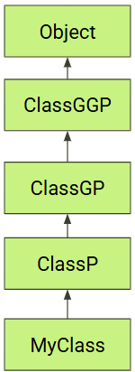

Lesson G7: Constraint Typing#
In this lesson we learn:
How to easily interpret Constraint Typing
Why we need to, and the benefits we gain from, constraining our
generictypesThe syntax of Constraint Typing and Wildcard Typing
How to write generic methods using constraints
Overview#
A primary purpose of Constraint Typing is to allow a generic method to safely call methods on a generic type. For example, the method may want to require that a generic type T implements an interface or inherits from parent a class. Constraints establish an IS-A relationship and eliminate the need to blindly (and unsafely) type cast.
For example, we may want to call a generic method where we are guaranteed that our generic type T implements the interface Runnable. We can do that as follows:
public static <T extends Runnable> runIt(T t) {
// Do stuff with the object t
...
// call `run` safely since `t` implements the Runnable interface
t.run();
}
How to Simplify#
The syntax of Constraint Typing can muddy the waters and make the code look unusually complicated. This is particularly true with wildcards. When you read complicated code, you can eliminate many of the constraints to aid your understanding. Once you understand what the generic method is doing, know that the constraint typing simply extends the capability of the code.
Click to see example
Here are two examples of simplification. The simplified versions are not truly 100% identical, but they much easier to read!
// Example #1
public <T extends Runnable> void runIt(T t) { }
// Simplify by replacing all `T` with `Runnable`
public void runIt(Runnable t) { }
// Example #2
public class Example2<T> {
public <U extends Comparable<? super U>> Comparator<T> thenComparing(
Function<? super T, ? extends U> keyExtractor) { }
// Simplify by removing all wildcards
public <U extends Comparable<U>> Comparator<T> thenComparing(
Function<T, U> keyExtractor) { }
// U implements Comparable
// The method returns a Comparator<T>
// keyExtractor is a function that takes a T and returns U
}
Syntax & Terminology#
Constraint Typing involves the wildcard token ? and the two keywords extends and super. The most common syntax you’ll see is:
<T extends SuperClass>This means that
TIS-ASuperClass.
In other words,Tis the classSuperClassor any subtype ofSuperClass.
At times, we do not know the type of the object; we only know the relationship to some other type. In these cases we would use Wildcards. We use ?.
? extends T: The?IS-AT.
? super T: TheTIS-A?.
We also make use of these two terms:
Upper Bound : A constraint using the
extendskeyword.Lower Bound : A constraint using the
superkeyword.
Discussion on Bounds#
In this section, we discuss Upper Bound and Lower Bound, what they mean, the syntax that establishes them, and their benefits.
Let’s first describe what Type Parameter Section means.
Type Parameter Section#
The Type Parameter Section is the area of the method prototype where generic types are declared. New generic types can be declared and constrained in this area. If a generic type has not been declared in this section (or the class declaration), then the parameters cannot make reference to them. Let’s look at some code.
// This class is not a generic class
public class Example {
public static <type parameter section> ReturnType methodName(parameters)
// The <T> is the type parameter section of this instance method
// Here we declare `T` without constraints
public <T> void method1(List<T> list) { }
// The <T extends Number> is the type parameter section
// Here we declare `T` and constrain it
public static <T extends Number> T method2(List<T> list) { }
// The <T, U extends String> is the type parameter section
// Here we declare both `T` and `U`
public static <T, U extends String> void method3(T item, U text) { }
// The `T` has not yet been defined. This won't work!
public static void method4(List<T> list) { } // ❌ INVALID!
}
Upper Bound (extends)#
When we specify that the type must be a subclass of a particular class, we call this an Upper Bound. Let’s draw a class diagram with the parent class at the top and several derived subclasses. (Note: GGP stands for Great Grandparent. GP stands for Grandparent. And P stands for Parent. )

// This generic method sets the Upper Bound of T to be `ClassGP`.
public static <T extends ClassGP> example(T t) { }
From the class hierarchy diagram, we can see that T is ALLOWED to be: ClassGP, ClassP, or MyClass. These three classes are at or below the Upper Bound.
Conversely, T is DISALLOWED from being: ClassGGP or Object. These two classes are above the upper bound.
Benefits of Generics#
The code below shows a longer example of using an Upper Bound constraint. It illustrates the benefits of using Generics versus simply using the base class Node.
public class Node {
public Node left;
public Node right;
/* other code not shown */
}
public class BSTNode extends Node { }
public class GrandNode extends BSTNode { }
public class Example {
// ---- Generic implementation ---
public static <T extends Node> List<T> getListGeneric(T root) {
List<T> list = new ArrayList<>();
// T is-a Node. We can treat it as a Node object even if it is not
// precisely a Node. It could be a BSTNode. No casting necessary.
System.out.printf("Left child: %s\n", root.left);
/* Code that add nodes to the list is not shown */
// we return a List<T> where `T` is precisely the type we want
return list;
}
public static <T extends Node> T findNodeGeneric(T root) {
T node = /* code not shown to find special node */
return node;
}
// ---- NON-Generic implementation of the code above ----
public static List<Node> getList(Node node) {
List<Node> list = new ArrayList<>();
System.out.printf("Left child: %s\n", node.left);
/* Code to generate list is not shown */
// we return a List<Node>
return list;
}
public static Node findNode(Node root) {
Node node = /* code not shown */
return node;
}
// ---- Show how we call Generic and NON-Generic methods ----
public static void callIt() {
// creates a tree for us to use use
GrandNode root = createGrandTree();
// ---- call generic methods ----
List<GrandNode> list = getListGeneric(root); // List is accurately typed
GrandNode node = findNodeGeneric(root); // no need to type cast
GrandNode firstNode = list.get(0); // no need to type cast
// ---- call the non-generic methods ----
List<Node> list = getList(root); // List is poorly typed
// We are not allowed to type cast the list itself
// List<GrandNode> list = (List<GrandNode>) getList(root); // Won't work!!
GrandNode node = (GrandNode) findNode(root); // Type Casting **required**
GrandNode firstNode = (GrandNode) list.get(0); // Type Casting **required**
}
}
In the code above, the generic implementation uses constraints so that the generic type T can be Node or any subclass of Node such as BSTNode or GrandNode. When we call the generic methods, the results are typed exactly as we want them. No type casting is necessary.
The code also attempts to accomplish the same thing by having the non-generic methods accept the base class Node. You can see that when we call the non-generic methods, the return types are Node and we must resort to type casting to get the types we want.
Benefit of Generic
The benefits of using generics are:
Type Safety at Compile Time: Errors are caught at compile time.
Type Casting: There is no need to do Type Casting.
Preserves Specific Type Information: Generic Collections contain the intended, designated type to allow for continued type-safe operations.
Lower Bound (super)#
When we want to require the type to be a particular class or a superclass of it, this is called a Lower Bound. Let’s once again observe the class hierarchy diagram to illustrate how Lower Bound works.
// This generic method sets the Lower Bound to `ClassGP`.
public static void example(List<? super ClassGP> list) { }
Using the class hierarchy diagram, we can see that we are allowed to have the following type of Lists: List<ClassGP>, List<ClassGGP>, or List<Object>. These classes are at or above the Lower Bound.
Conversely, the following List types are DISALLOWED: List<ClassP> or List<MyClass>. These two classes are below the lower bound.
Lower Bounds require Wildcard
We are required to use the wildcard ? when using super to set the Lower Bound.
We cannot put the wildcard ? in the Type Parameter Section. We are not allowed to use the wildcard there.
// wildcards are not allowed in Type Parameter Section
public static <? super ClassPG> void example(List<?> list) { } // ❌ INVALID!
// T is not allowed to set a Lower Bound using `super`
public static <T super ClassPG> void example(List<T> list) { } // ❌ INVALID!
More on Lower Bound#
Let’s look at another example of a Lower Bound.
// setting a lower bound for '?' so that it must be: ClassP or above.
// ? can be: ClassP, ClassGP, ClassGGP, or Object
public static void addToList(List<? super ClassP> list) {
// have our list consume objects
list.add(new ClassP());
list.add(new MyClass()); // MyClass is-a ClassP which is-a `?`
}
public static void callAddToList() {
List<Object> list = new ArrayList<>();
addToList(list);
List<ClassP> list2 = new ArrayList<>();
addToList(list2);
}
// Here we set a Lower Bound to a Generic Type `T`
public static <T> void addToList2(List<? super T> list, T item) {
list.add(item); // T is-a (? super T)
}
public static void callAddAgain() {
// Everything in the List<Number> IS-A Number
List<Number> numbers = new ArrayList<>();
// Everything in the List<Object> IS-A Object
List<Object> objects = new ArrayList<>();
// `T` is decided by the second argument
addToList2(numbers, 42); // T=Integer, List<? super Integer> accepts List<Number>
addToList2(numbers, 3.14); // T=Double, List<? super Double> accepts List<Number>
addToList2(objects, "hello"); // T=String, List<? super String> accepts List<Object>
addToList2(objects, new ClassP()); // T=ClassP, List<? super ClassP> accepts List<Object>
}
In the code above, there are two examples to discuss:
addToListwill generically accept the following Lists:List<Object>,List<ClassGGP>,List<ClassGP>andList<ClassP>. This is because it accepts aList<? super ClassP>. This means the list can hold items that IS-AClassP. It is guaranteed to be able to hold items of typeClassPorMyClass(becauseMyClassis-aClassP).addToList2will generically accept aList<? super T>whereTis determined by the second argument.
Constraining with an Interface#
So far we’ve focused on having the generic methods be constrained by a class. Far more popular is constraining a type with an interface.
public static <T extends Comparable<T>> void doComparableStuff(List<T> list) {
for (int i = 0; i < list.size() - 1; i++) {
T t1 = list.get(i);
T t2 = list.get(i+1);
// Compare the items in the List using the Comparable method compareTo.
// This requires that the class `T` implements Comparable. That's okay.
// The Type Parameter Section assures that `T extends Comparable<T>`.
int cmp = t1.compareTo(t2);
System.out.println(cmp);
}
}
extends vs implements
When creating an Upper Bound, we always use extends. We use extends even for interfaces.
public static <T implements Comparable<T>> void isComparable(List<T> list) // ❌ INVALID!
Reviewing Valid & Invalid Syntax#
// ✅ Valid in type parameter section:
public static <T> void method() { }
public static <T extends SomeClass> void method() { }
public static <T extends Class1 & Interface1> void method() { }
// ❌ Invalid in type parameter section:
// Wildcards cannot appear in the Type Parameter Section
public static <? extends SomeClass> void method() { }
public static <? super SomeClass> void method() { }
public static <?> void method() { }
// ✅ Wildcards are allowed to define the types of the parameters and return types
public static void method(List<? extends Number> param) { }
public static List<? super String> getList() { }
Bounding with extends and super
Bound Type |
Wildcard |
Using |
|---|---|---|
Upper ( |
✅ |
✅ |
Lower ( |
✅ |
❌ |
Wildcards cannot be used in the Type Parameter Section. They can be used as type arguments in parameter types, return types, and variable declarations.
Wildcard Usage:
// ✅ Valid - wildcards in method parameters
public static void method(List<? super Integer> list) { }
// ✅ Valid - wildcards in method return type
public static List<? extends Number> getList() { }
// ✅ Valid - wildcards in variable declarations
List<? super String> myList;
// ❌ Invalid - wildcards in type parameter section
public static <? super T> void method(List<T> list) { } // ❌ Invalid
Lower-Bounded Wildcards (? super T)#
A Lower-Bounded Wildcard restricts the wildcard to a specific type T or its superclasses. Note that a class can be considered a superclass of itself. T is a superclass of T.
In the code below we require the Comparator to have a generic type that is a superclass of T. This way, we can make use of the Comparator in the Person class, the superclass of Kid. We are also allowed to use the Comparator found in the Kid class.
public class Person {
public int age;
public static int compareByAge(Person p1, Person p2) {
return p1.age - p2.age;
}
}
public class Kid extends Person {
public int dominance;
public static int compareByDominance(Kid k1, Kid k2) {
return k1.dominance - k2.dominance;
}
}
public class Example {
public void example(Kid k1, Kid k2) {
// Since the Comparator works with Kids, this line of code would
// work even if we didn't have the lower-bound, <? super>
System.out.printf(" Kid Comparison: %d\n",
reverseCompare(k1, k2, Kid::compareByDominance));
// This line would fail if we didn't have <? super T>
System.out.printf("Person Comparison: %d\n",
reverseCompare(k1, k2, Person::compareByAge));
}
public static <T> int reverseCompare(T o1, T o2, Comparator<? super T> comparator) {
return comparator.reversed().compare(o1, o2);
}
}
Unbounded Wildcards (?)#
The wildcard ? represents an unknown type without any restrictions. This is useful when you don’t care about the type but want to ensure type safety.
The choice between T and ? in generics depends on whether you need to maintain type relationships and use the type parameter elsewhere in your method.
// Only need size, don't care about contents
public static int getTotalSize(List<List<?>> listOfLists) {
int total = 0;
for (List<?> list : listOfLists) {
total += list.size(); // size() doesn't depend on generic type
}
return total;
}
// Works with any nested list structure
getTotalSize(Arrays.asList(
Arrays.asList("a", "b"), // List<String>
Arrays.asList(1, 2, 3), // List<Integer>
Arrays.asList(true, false) // List<Boolean>
));
// With T - maintains type consistency
public static <T> int getTotalSize(List<List<T>> list) {
// All inner lists must contain the same type T
// You could add elements of type T to any inner list
// You could return elements of type T
}
// With wildcard - allows mixed types
public static int getTotalSize(List<List<?>> listOfLists) {
// Inner lists can contain different types
// You can only read elements as Object (except null)
int total = 0;
// We can get all inner lists
for (List<?> list : listOfLists) {
total += list.size();
}
return total;
// More restrictive for modifications. See Type Erasure topic
// for more details.
}
What’s so important?  #
#
Generics offer Type Safety at Compile Time and eliminate the need for Type Casting.
To invoke a method on a generic type, we need to constrain the type. Example:
<T extends Interface>.To help us read methods with complicated Constraint Typing, we can eliminate wildcards and sometimes replace the generic type with the upper bound type.
You should be able to write methods involving upper bounds. Example:
<T extends Interface>.Wildcards are necessary for creating lower bounds. Wildcards are sometimes necessary to enable greater flexibility.